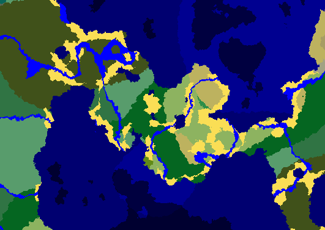

Sezóna 1

Sezóna 1 je to, kde všechno začalo. Byl jeden z těch nejjednodušších, a vydržela hezký měsíc a půl- bohužel predběžně ukončen griefem. Ale kde něco končí, jiné začíná. A porodila spoustu konceptů které se v pozdějších sezónách staly standartem, a svým způsobem pomohl nastolit identitu celé sérii těchto serverů.